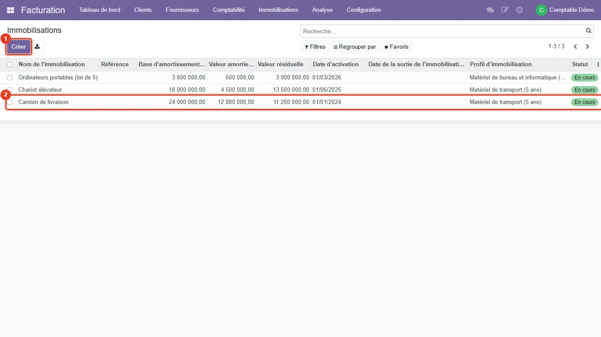
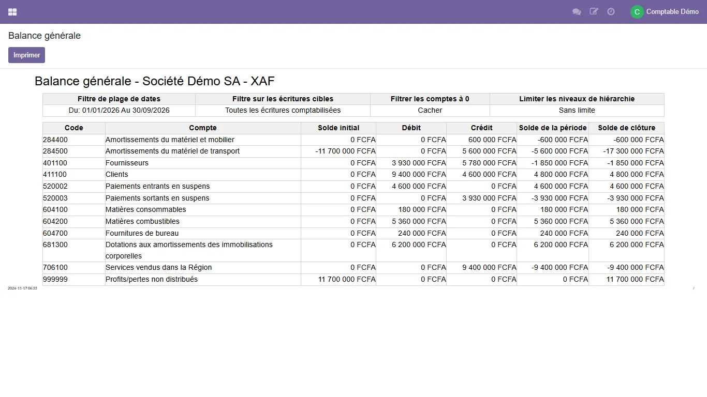

Objectif. Vérifier que les fiches et les comptes 28 disent la même chose.
Où dans Odoo 15Facturation › Immobilisations › Immobilisations, puis Balance générale


Ce que vous faites
- Dans la liste des immobilisations, lisez la colonne Valeur amortie de chaque bien.
- Faites le total par profil (Regrouper par profil).
- Éditez la balance générale à la même date (leçon 9.1).
- Comparez : total des biens d'un profil = solde du compte 28 du profil.
À vérifier avant de continuer
0 / 1À éviter.
- Pas d'écriture manuelle sur un compte 28 : elle crée un écart avec les fiches.
Exercice sur la base de test
Comparez le cumul du matériel de transport au solde du 284500.